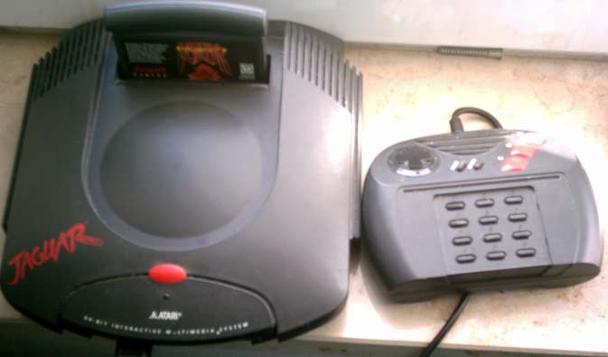

Atari Jaguar, 1993
CPU:
Motorola 68000
Frequência: 13,3 MHz
Processador gráfico:
“Tom”, 26,59 MHz
RISC 32 bits
DSP
“Jerry”, 26,59 MHz
“Jerry”, 26,59 MHz
Programação complexa
Controle “complexo”
Unidades vendidas: 250 mil unidades